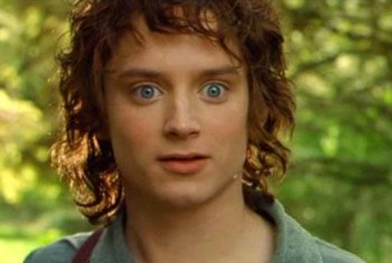

Frodo Bolsón
Hobbit · Portador del Anillo
Habitante de la Comarca que recibe la misión de llevar el Anillo Único hasta Mordor. Su viaje refleja el peso del sacrificio y la lucha interna contra la corrupción del poder.